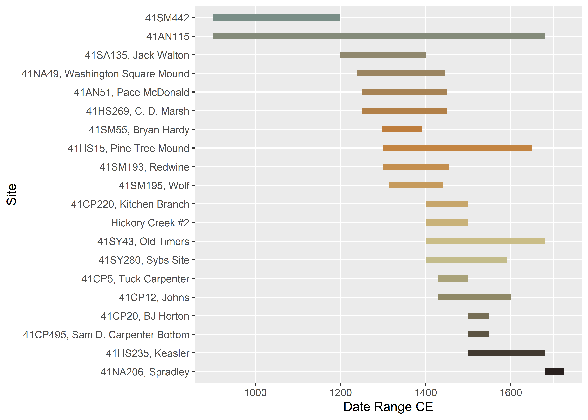

Chapter 2 Temporal
# load ggplot2
library(ggplot2)
library(wesanderson)
# temporal attributes
pal <- wes_palette("Moonrise2", 10, type = "continuous")
# gantt chart of relative dates for perdiz arrow points
temp<-data.frame(Site = c('Tuck Carpenter', 'Johns', 'BJ Horton', 'Pine Tree Mound', 'Washington Square Mound', 'Spradley', 'Jack Walton', 'Redwine', 'Old Timers', 'Sybs Site'),
Date_Range_CE = c(1430,1430,1500,1300,1238,1680,1200,1300,1400,1400), # in years CE
end = c(1500,1600,1550,1650,1445,1725,1400,1454,1680,1575) # in years CE
)
# reorder types by beginning of relative date range
temp$Site <- factor(temp$Site, levels = temp$Site[order(temp$Date_Range_CE)])
# arrange figure
type.time <- ggplot(temp,
aes(x = Date_Range_CE,
xend = end,
y = factor(Site,
levels = rev(levels(factor(Site)))),
yend = Site,
color = Site)) +
geom_segment(size = 2.5) +
scale_colour_manual(values = pal) +
theme(legend.position = "none") +
labs(y = "Site", x = "Date Range CE")
# render figure
type.time